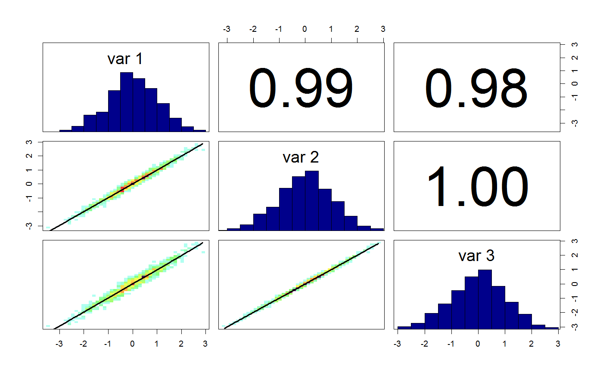

Flexible function to create correlation density plots
correlationPlot(mat, density = "smooth", thin = "auto", method = "pearson", whichParameters = NULL, ...)
| mat | object of class "bayesianOutput" or a matrix or data frame of variables |
|---|---|
| density | type of plot to do. Either "smooth" (default), "corellipseCor", or "ellipse" |
| thin | thinning of the matrix to make things faster. Default is to thin to 5000 |
| method | method for calculating correlations. Possible choices are "pearson" (default), "kendall" and "spearman" |
| whichParameters | indices of parameters that should be plotted |
| ... | additional parameters to pass on to the |
The code for the correlation density plot originates from Hartig, F.; Dislich, C.; Wiegand, T. & Huth, A. (2014) Technical Note: Approximate Bayesian parameterization of a process-based tropical forest model. Biogeosciences, 11, 1261-1272.
marginalPlot
plotTimeSeries
tracePlot
